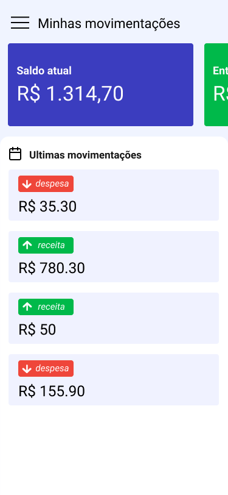

Desenvolvedor Full Stack
Veja meu portfólio completo feito em Next.js: rainerdrummond.com
Ver Projetos
Plataforma digital de produtos usando Next.js, React, React Native e Node.js.
Aplicativo de gateway de pagamento e banco usando Next.js, React e Node.js.
Plataforma fintech usando React, Next.js, Node.js e TypeScript.
"Trabalhei com Rainer no nosso último projeto, onde ele foi o líder do front-end. Além de dominar React, Next.js, TypeScript e Tailwind, ele tem uma visão clara de produto e foco total na experiência do usuário. Ele reestruturou todo o front-end, implementando melhores práticas que melhoraram muito o desempenho e a organização do código. Profissional técnico, ágil e com forte capacidade de liderança."
- Matheus Cardoso, Desenvolvedor Full Stack
"Tive o prazer de trabalhar com Rainer na mesma equipe e seu comportamento profissional é exemplar. Como QA e PO, valorizo muito desenvolvedores que não apenas entregam código, mas também se preocupam com a experiência do usuário e a qualidade final. Rainer é sempre proativo, resolve problemas de forma rápida e eficaz, e tem uma incrível capacidade de propor soluções práticas para desafios complexos do Front-end. Ele é um profissional criativo, habilidoso e um parceiro de equipe excepcional!"
- Fernanda Bucci, Engenheira de QA
"Tive a oportunidade de trabalhar com Rainer Drummond nos projetos Seercard e Get Now, onde ele atuou como desenvolvedor front-end construindo módulos e interfaces. Rainer é muito consistente no que entrega. Tem grande consciência de usabilidade, atenção aos detalhes e cuidado em transformar requisitos em interfaces claras e funcionais. Além disso, é fácil trabalhar com ele: comunica bem, entende rapidamente o que precisa ser feito e sempre busca soluções práticas. É um profissional comprometido, confiável e que realmente se preocupa com a qualidade do front-end. Recomendo com confiança para qualquer equipe que precise de um desenvolvedor front-end sólido e colaborativo."
- Hugo Amorim, Engenheiro de Software
"Tive o prazer de trabalhar com Rainer no GetNow, onde ele atuou como meu supervisor. Durante esse tempo, pude aprender muito com sua forma clara e objetiva de liderar a equipe, sempre equilibrando qualidade técnica, organização e foco em resultados. Rainer se destaca pela capacidade de guiar com precisão, fornecer feedback construtivo e criar um ambiente de trabalho colaborativo onde o crescimento profissional acontece naturalmente. Sua liderança fez uma diferença real no meu desenvolvimento técnico e na forma como abordo desafios no dia a dia. Recomendo fortemente Rainer como líder e profissional, alguém que agrega valor real à equipe e aos projetos em que se envolve."
- Daniel Ricardo, Desenvolvedor Full Stack
Oi, eu sou Rainer — um Designer e Engenheiro Frontend do Brasil com mais de 5 anos de experiência. Minha jornada começou no design, e isso moldou completamente a forma como desenvolvo: penso em interfaces antes do código, valorizo a clareza visual e priorizo experiências perfeitas.
Nos últimos anos, fiz parte de projetos de alto impacto no setor financeiro, incluindo um sistema de gestão que processou mais de 375.000 transações. Essa experiência reforçou minha atenção à arquitetura, performance, qualidade do código e consistência de interface.
Meu foco é transformar ideias em produtos reais, combinando meu background em Design e UX com desenvolvimento Frontend avançado, melhores práticas de código limpo e componentização, além de experiência em integração de APIs e desenvolvimento back-end com Node.
Busco contribuir para equipes que valorizam qualidade, colaboração e inovação — entregando soluções que são visualmente sólidas, tecnicamente robustas e verdadeiramente úteis para os usuários.
HTML5
CSS3
JavaScript
TypeScript
React
Next.js
React Native
Node.js
PostgreSQL
Figma
Git
GitHub
Crio sites e aplicações web responsivas e modernas usando as melhores práticas e tecnologias atuais.
Desenvolvo aplicativos móveis nativos e híbridos para iOS e Android com React Native.
Construo APIs robustas e sistemas backend escaláveis com Node.js, Python e bancos de dados.